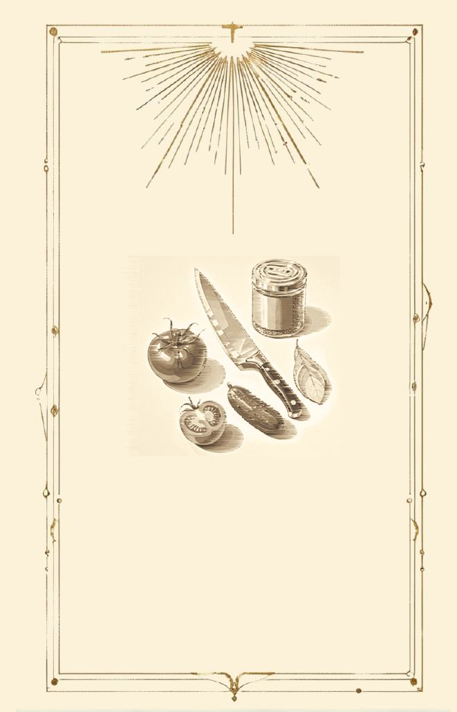

探索方向
Dynamic Visual Narrative / Visual Storytelling / Atmosphere-driven Design。

Motion preview
将 `visual-demo.mp4` 放入 assets 文件夹后，这里会直接播放动态标题或视觉实验视频。
Dynamic Visual Narrative / Visual Storytelling / Atmosphere-driven Design。
叙事性、情绪强度、动态潜力，以及是否能进入交互体验。
证明我能从生成式视觉中筛选、组织并转化出统一的视觉语言。
Gallery
